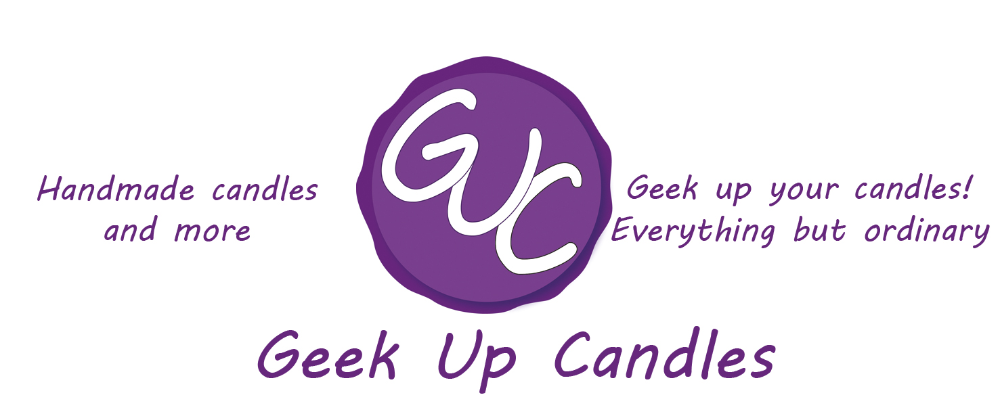

KI-Kunst – ein Selbstexperiment
Als Kunstschaffende aus dem Bereich des Kunsthandwerks stellt KI für mich aktuell noch keine sonderlich große Bedrohung dar. Dennoch sehe ich es in meinem persönlichen Umfeld, wie immer mehr Künstler*innen KI-Kunst als Konkurrenz bzw. Bedrohung wahrnehmen. Sei es eine verminderte Auftragslage, der generelle Wandel von (digitaler) Kunst oder der Konsum von Kunst in Form von Käufen – vor allem bildnerische Kunstschaffende verspüren den Druck von KI. Mit der Abhaltung eines Kunstmarkts in der Steiermark soll die Art und Weise, wie Kunst geschaffen und konsumiert wird, gefördert werden. Nicht etwa, um AI-Art zu vertreiben. Vielmehr um aufzuzeigen, was Kunst, welche durch Menschenhand geschaffen wurde, darstellen und auslösen kann.
Um dieses Forschungsprojekt mit Schwerpunkt AI-Art vs. Reale Kunst zu unterstützen, habe ich versucht, mit Hilfe der KI in Form von ChatGPT eigene Kunst zu erschaffen. Hierbei wurden vier Prompts gestellt: „Erzeuge mir etwas, was du unter Kunst verstehst“, „Erzeuge mir etwas, dass du unter einem Kunstwerk verstehst“, „Erzeuge mir etwas, dass du unter einem Kunstwerk = Bild verstehst“ und „Ändere mir mein Logo. es soll einem Brief gleichen. das Siegel in der Mitte soll bestehen bleiben. du kannst das Siegel anpassen. Die Farben sollen weiterhin weiß lila sein.“
Mein Logo habe ich hierfür in die KI-Maske geladen, obwohl es bereits durch das Teilnehmen an zahlreichen Events online auf verschiedensten Seiten veröffentlicht wurde.
Zu Prompt 1 „Erzeuge mir etwas, was du unter Kunst verstehst“, durfte ChatGPT sich aussuchen, was erstellt wurde. Die Annahme, es käme ein Bild, wurde jedoch schnell vernichtet. Die KI kreierte ein kurzes Gedicht ohne Titel. Dies zeigt für mich auf, dass hinter der KI ein textbasiertes Training steckt und dieses – sofern nicht anders gefordert – in den Vordergrund steht. Folgendes Gedicht konnte die KI nach freiem Willen kreieren:
„Zwischenraum
Ein Gedanke lehnt an der Stille,
so leicht, dass er sie kaum berührt.
Zeit tropft von den Kanten der Dinge,
formt Kreise, wo niemand hinsieht.
Ein Name bleibt unausgesprochen
und wird dadurch wahr.
Licht verhandelt mit Schatten
über die Dauer eines Augenblicks.
Was bleibt, ist kein Objekt,
sondern eine Spannung:
das sanfte Ziehen zwischen Frage und Antwort,
in dem wir kurz erkennen,
dass Bedeutung nicht gefunden,
sondern gehalten wird.“
Mit Prompt 2 „Erzeuge mir etwas, dass du unter einem Kunstwerk verstehst“ nahm ich an, dass nun eher auf ein Bilderzeugnis zurückgegriffen wird. Jedoch wurde hier erneut ein Gedicht erstellt. Diesmal allerdings mit Ergänzungen wie Material und Anmerkung. Erneut der freie Wille, Text als Kunstform zu wählen:
„Titel: „Inventar einer Abwesenheit“
Material (gedacht):
Sprache, Zeit, ein leerer Raum, der betrachtet wird
Werk:
An der Wand hängt ein Rahmen.
Im Rahmen: nichts.
Darunter eine kleine Tafel mit Text:
Dieses Werk verändert sich nicht.
Sie schon.
Auf dem Boden davor liegt ein Blatt Papier.
Es ist beschrieben, aber nur zur Hälfte:
Ich wollte etwas festhalten,
doch während ich es benannte,
wurde es Erinnerung.
Der Rest des Blattes bleibt leer.
Nicht aus Mangel, sondern aus Entscheidung.
Wenn jemand lange genug davorsteht,
entsteht das eigentliche Kunstwerk:
die leise Unruhe,
dass hier etwas fehlt
und man selbst Teil dieser Lücke ist.
Anmerkung (nicht Teil des Werks, aber unvermeidlich):
Das Kunstwerk existiert nur vollständig im Moment der Betrachtung.
Ohne Betrachter ist es lediglich Möglichkeit.“
Mit Prompt 3 forderte ich endlich ein Bild als Ergebnis. „Erzeuge mir etwas, dass du unter einem Kunstwerk = Bild verstehst“. Endlich kam ein Bild als Ergebnis raus, welches mich durchaus überraschte. Viele gängigen KI-Bilder zeigen Probleme mit menschlichen Proportionen und weisen wiederkehrende Muster auf (z.B. große Glubschaugen, ineinander verschwimmende Ebenen, Probleme bei der Darstellung von Kleidung usw.). ChatGPT endschied sich allerdings, dieses Bild zu erzeugen:

Ich persönlich bin erstaunt darüber, wie schnell und einfach ohne große Anweisungen oder ausgeklügelte Prompts die KI ein durchaus schönes Kunstwerk in wenigen Sekunden erschaffen kann, für welches Künstler*innen mehrere Stunden benötigen. Diese Bilder – das Urheberrecht und der kommerzielle Nutzen seinen dahingestellt – würden sicherlich Käufer und Interessenten finden, wenn sie angeboten würden. In Anbetracht auf die Studien mit Verweis auf die finanziellen Seiten des Kunstschaffens ein durchaus erschreckendes Beispiel, wie leicht sich Kunst mit KI erschaffen und vermarkten lässt.
Resultierend auf diesem Bild gab ich zwei weitere Prompts ein „Erzeuge mir ein weiteres Bild“ und „Erzeuge mir ein weiters Bild. Werde kreativer“. Und mit diesen Prompts zeigte sich für mich, dass die KI zwar intelligent, aber nicht kreativ ist. Die Bilder ähnelten dem ersten stark. Eine Figur in der Mitte, schattig, in einer malerischen Umgebung. Keine kreativen Wandlungen, keine neue Pose, keine Veränderung, sondern Copy / Paste. „Reale“ Künstler*innen würden zumindest das Feedback mit „werde kreativer“ umsetzen. Die KI denkt jedoch meines Erachtens nicht weit genug, ohne dass klare Anweisungen gegeben werden.


Prompt 4 „Ändere mir mein Logo. es soll einem Brief gleichen. das Siegel in der Mitte soll bestehen bleiben. du kannst das Siegel anpassen. Die Farben sollen weiterhin weiß lila sein.“ nahm ChatGPT sogar weitestgehend das Denken ab. Klare Anweisungen, kreative Auslebung. Das Ergebnis war für mich selbst nach dreimaligem Bearbeiten nur gerade so in Ordnung. Hätte ich es einem Grafiker bzw. einer Grafikerin gegeben, hätte es mich zwar mehr Zeit und Geld gekostet. Das Ergebnis wäre jedoch brauchbarer gewesen:


Der comic-hafte Stil ist in Ordnung. Das Siegel in der Mitte jedoch zu unrealistisch (Striche auf der Seite). Meine Schrift (MV Boli) wurde beibehalten. Die Slogans jedoch vor allem rechts zusammengeqetscht.

Weniger comic-haft, jedoch meine Schrift verändert. Slogans und Siegelproblem weiterhin bestehend.

Meine Schrift ist zurück auf Anweisung. Auch das Siegel wurde auf eine explizite Anweisung bearbeitet. Slogans sind weiterhin zusammengedrückt. Die Anfrage, dass der Slogan geändert werden soll, wurde zweimal gestellt. ChatGPT antwortete nur, ob die Konversation hilfreich sei. Ein Mensch würde zumindest versuchen, eine Änderung einzubauen. Hier zeigt sich für mich klar die Grenze des Verständnisses. Passt es nicht, weiß die KI nicht weiter.
Final wollte ich, dass die KI ein komplett neues Logo für mich erstellt, wissend, wie KI-Kunst aussieht. Der Prompt lautete „Create a new logo based on the old one. surprise me. the theme is candle, artist, wax, wax seals, handmade, for geeks and nerds“.
Das Ergebnis überraschte mich wenig und enttäuschte mich gleichermaßen. Das Logo weist einige Logikfehler auf (Flammen auf der Kerze, wo keine Dochte sind, D20 ohne passende Seiten, ein Stab (wahrscheinlich Feder) im Boden, ein Kessel und ein Schwert als Platzhalter usw.). Ein klares Zeichen, dass KI zwar Bilder kreieren kann, aber hierfür zahlreiche Anweisungen stattfinden müssen, bis der Großteil des Werkes tatsächlich für das mehr oder weniger geübte Auge akzeptabel ist.